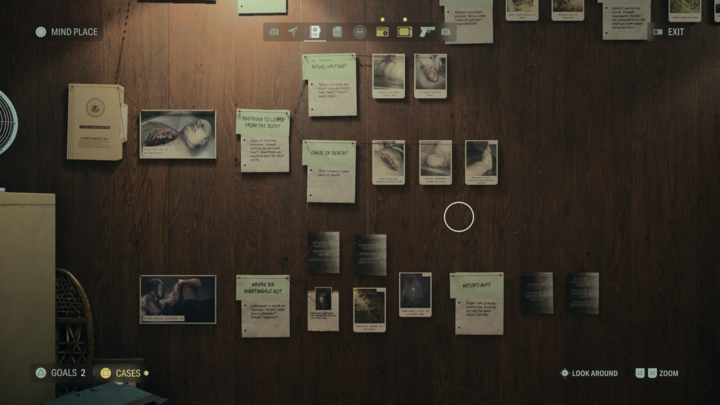
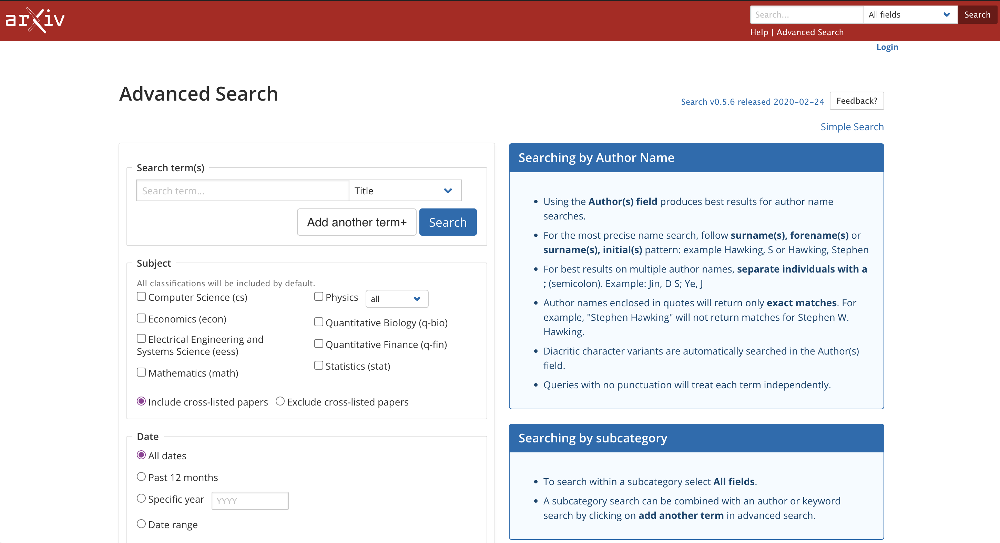
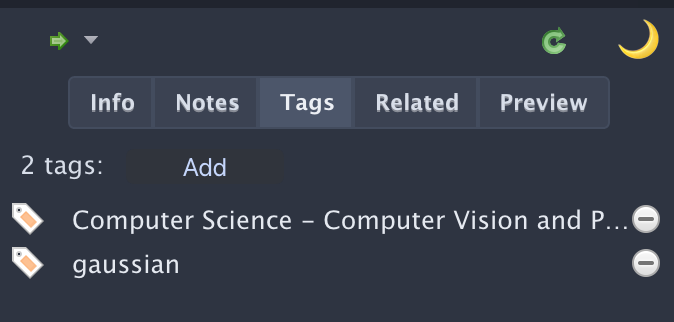
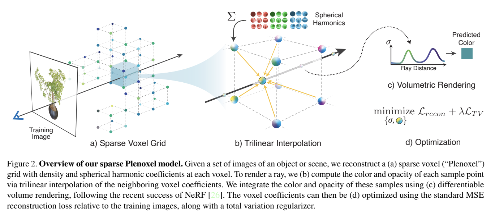
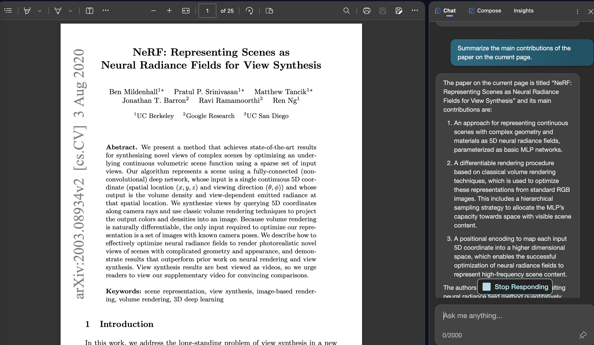

<!doctype html>
<html lang="en">

<head>
    <meta charset="utf-8" />
    <meta name="viewport" content="width=device-width, initial-scale=1.0, maximum-scale=1.0, user-scalable=no" />

    <title>lec2 - 论文阅读和科研探索(CV)</title>
    <link rel="shortcut icon" href="./favicon.ico" />
    <link rel="stylesheet" href="./dist/reset.css" />
    <link rel="stylesheet" href="./dist/reveal.css" />
    <link rel="stylesheet" href="./dist/theme/simple.css" id="theme" />
    <link rel="stylesheet" href="./css/highlight/github.css" />
    <script src="https://cdn.jsdelivr.net/npm/reveal.js-menu@2.1.0/menu.js"></script>

    <link rel="stylesheet" href="./assets/custom.css" />
</head>

<body>
    <div class="reveal">
        <div class="slides"><section ><section data-markdown><script type="text/template">


<div class="middle center" style="position: relative;">
  <div style="width: 100%; display: inline-block; vertical-align: top; margin-top: 1em">
  
    <h1>lec2 - 文献检索和文献阅读</h1>
    <hr>
    <p>计算机学院朋辈辅学课程 -- 论文阅读和科研探索(CV)</p>
    <p>By <a href="https://github.com/cxzhou35">@Chenxu Zhou</a></p>
    <div style="text-align: right; margin-top: 2em; margin-right: 1em;">
      <p>2023.11.25</p>
      <p>Powered by <a href="https://github.com/webpro/reveal-md">@reveal-md</a></p>
      <p>template copyright <a href="https://github.com/TonyCrane">@TonyCrane<i class="fab fa-github"></i></a></p>
    </div>
  </div>
</div>

</script></section><section data-markdown><script type="text/template">

## News Highlights

[How Northlight makes Alan Wake 2 shine?](https://www.remedygames.com/article/how-northlight-makes-alan-wake-2-shine)



</script></section><section data-markdown><script type="text/template">

## Table of Contents

1. 文献检索
    1. 如何查找文献
    2. 如何管理文献
2. 文献阅读
    1. 哪些文献是值得读的
    2. 如何阅读文献
    3. 如何写文献笔记

</script></section></section><section ><section data-markdown><script type="text/template">

<div style="position: absolute; top: 0; right: 0; ">
    
</div>

<div class="middle center">
<div style="width: 100%">

# Part.1 文献检索

</div>
</div>

</script></section><section data-markdown><script type="text/template">

## 1. 如何查找文献

<div class="fragment">

一般在找文献的时候，通常我们会面临以下几种场景：

</div>

<div class="fragment">

- 想找一篇关于某个领域的<span style="color: #0b61cd;">综述</span>，了解一下这个领域的发展历史和研究现状
- 想找一篇关于某个领域的<span style="color: #0b61cd;">最新进展</span>，了解一下这个领域的最新研究进展
- 刚开始接触一个新的研究领域，想找一些<span style="color: #0b61cd;">经典的文献</span>，了解一下这个领域的经典工作
- 老师给了我一个课题或者是一些材料，让我自己去找<span style="color: #0b61cd;">相关的文献</span>

</div>

<div class="fragment">

那么面对这些场景，我们该如何高效地查找到需要的文献资料？

</div>

<div class="fragment">

- 明确自己的需求：
    - 文献类型：综述论文、最新进展、经典文献、相关文献
    - 研究领域：课题关键词，重要任务

</div>

<div class="fragment">

- 善用工具：
    - 这部分内容接下来会详细介绍 :)

</div>

</script></section><section data-markdown><script type="text/template">

### 1.1 去哪里找文献

在我明确了自己的需求之后，我该去哪里找文献？

- 文献收录库：
    - ArXiv
    - IEEE Xplore
    - ACM Digital Library
- 顶会/顶刊
    - CVPR/ICCV/ECCV (CV三大顶会)
    - AAAI/IJCAI/NeurIPS/ICML (AI顶会)
    - Siggraph/Siggraph Asia (CG顶会)
- 搜索引擎
    - Google Scholar
    - Semantic Scholar

如果你不知道你的科研领域有哪些顶会/期刊<br>
可以去这个网站查看：[CCF Rec. Conference Deadlines](https://ccfddl.github.io/)

</script></section><section data-markdown><script type="text/template">

### 1.2 如何快速查找

在找文献的时候，可以通过一些方法/技巧提高找文献的效率

- 使用适当的关键词和搜索运算符来缩小搜索范围
    - 使用<span style="background-color: #0b61cd; color: white;">引号</span>来获得“完全一致”的搜索结果
    - 使用 OR（或）、 AND（且）等<span style="background-color: #0b61cd; color: white;">逻辑符</span>合并搜索结果
- 利用高级搜索选项（大部分文献库和学术搜索引擎都有这个功能）

<div align=center></div>

</script></section><section data-markdown><script type="text/template">

## 2. 如何管理文献

文献管理是科研中一个非常重要的技能，可以帮助你建立起自己的文献库，方便你后续的文献阅读和文献写作，提高科研质量和效率

- 选择文献管理工具
    - 可以同步不同的数据库
    - 管理文献信息方便
    - 引用文献信息方便
- 如何分类和标记
    - 快速建立个人文献体系
    - 需要的时候可以快速查找到文献

</script></section><section data-markdown><script type="text/template">

### 2.1 文献管理工具

常用的几款文献管理工具：

- [EndNote](https://endnote.com/):
    - 优点：高级功能很多，高度自定义引用输出格式
    - 缺点：收费<del>（学习版网上也有很多）</del>，不支持标签(tag: 🏷)
- [Mendeley](https://www.mendeley.com/)
    - 优点：开源免费，跨平台支持非常好，社区非常完善
    - 缺点：没有明显硬伤，体验不错
- [Zotero](https://www.zotero.org/)
    - 优点：开源免费，插件丰富，标注功能强大，标签和多级目录非常好用
    - 缺点：自定义程度相较于EndNote差一些，但瑕不掩瑜

> 以上三款文献管理工具都是非常优秀的，可以根据自己的需求和喜好选择适合自己的工具

</script></section><section data-markdown><script type="text/template">

### 2.2 如何分类和标记

在管理文献的时候，最好有一定的逻辑性和条理性，这样可以方便我们后续的文献查找

以下是一个分层级的结构和举例：

```
- Fields
    - Tasks
        - Methods/Pipelines

# example
- 三维视觉
    - 动态场景渲染
        - Dynamic Scene Graph / Time Varying NeRF / ...
```



善用标记（tag）也可以帮助我们提高文献管理和文献查找的效率，tag 的使用可以根据自己的需求来，比如：

- 文献的类型：综述、最新进展、经典文献
- 论文方法所属的类别：MLP/Mesh/Voxel
- 论文所属的领域：CV/CG/ML

</script></section></section><section ><section data-markdown><script type="text/template">

<div style="position: absolute; top: 0; right: 0; ">
    
</div>

<div class="middle center">
<div style="width: 100%">

# Part.2 文献阅读

</div>
</div>

</script></section><section data-markdown><script type="text/template">

## 1. 哪些文献是值得读的

> 部分内容摘录自 [learning_research <i class="fab fa-github"></i>](https://github.com/pengsida/learning_research/blob/master/getting_started_in_research.md)，主要是面向 3DV 领域

- 领域内比较完善的综述，适合在刚接触一个领域的时候阅读<br><u>这种综述对于小白来说不太容易找</u>
- 领域内 milestone task 的 seminal work<br> -> 高质量神经渲染: [NeRF](https://www.matthewtancik.com/nerf)
- 领域内 novel pipeline/representation 的 seminal work<br> -> 用 Voxel 显式建模场景：[Plenoxels](https://alexyu.net/plenoxels/)
- 领域内重要 challenge 的 insights<br> -> 解决 NeRF 渲染的模糊和锯齿效果： [Mip-NeRF](https://arxiv.org/abs/2103.13415)

在阅读了大量论文之后，有了一定的领域认知和科研经验积累，在阅读论文时会更加敏锐、游刃有余，也会更加容易判断论文的质量和贡献

</script></section><section data-markdown><script type="text/template">

## 2. 如何阅读文献（一）

> 部分内容摘录自 [learning_research <i class="fab fa-github"></i>](https://github.com/pengsida/learning_research/blob/master/getting_started_in_research.md)，主要是面向 3DV 领域

<div class="fragment">

有同学和我交流的时候会问我如何阅读论文，通常有以下两种情况：

</div>

<div class="fragment">


- 看完一篇论文跟没看一样，看过忘过或者看的时候云里雾里

</div>

<div class="fragment">

- 看论文很慢，不知道哪些是重点，看一篇论文要看一个星期

</div>

<div class="fragment">

在阅读论文的时候，通常有三个层次：

1. 第一个层次（基本标准)：读懂论文中的所有技术细节和术语（可能需要通过读代码来辅助读懂论文）
2. 第二个层次：知道这篇论文在<span style="background-color: #0b61cd; color: white;">解决什么问题</span>，知道这篇论文为什么要提出 xx 技术、为什么这样做会更好
3. 第三个层次：清楚这篇论文在科研领域中的<span style="background-color: #0b61cd; color: white;">定位和价值</span>，并思考该科研方向需要解决的更重要的问题。<br>
思考这篇论文的 <span style="background-color: #0b61cd; color: white;">limitations 和 future work</span>

</div>

</script></section><section data-markdown><script type="text/template">

## 2. 如何阅读文献（二）

首先要明确论文的结构：

<div class="fragment">

```text[1-2|4-5]
*Abstract
*Introduction
Related Work
*Method
*Experiments
Conclusion
References
```

了解了论文的结构之后，大体也就明确了哪些部分是重点了

对于入门学习者，建议在读论文之前，先梳理一个框架出来，在读论文的过程中完善框架中的内容，读完了整篇论文会很清晰

</div>

</script></section><section data-markdown><script type="text/template">

## 建立论文框架

论文框架结构：

- What: 这篇论文主要做的工作是什么，基于什么背景
- How: 这篇论文具体是怎么做的，一般都会有以下部分
  - Pipeline
  - Cutting-edge 的方法
  - Tricks & Optimizations
- Results: 这篇论文最后的结果如何，如何衡量效果
  - Experiments & Metrics & Demo
  - Benchmarks 的适用范围

可以用笔记或者思维导图的形式先梳理一个这样的 backbone，之后在阅读论文的过程中一点一点填进去

</script></section><section data-markdown><script type="text/template">

## 以 NeRF 为例

我们以 NeRF 为例来使用一下这个框架：

- What: <br> 通过稀疏的输入视图优化底层的的连续神经辐射场，实现复杂场景的新视角合成
- How:
  - Pipeline
  - Cutting-edge 的方法: 可微的隐式场景表示
  - Tricks & Optimizations
    - 位置编码(Positional encoding)
    - 分层采样(Hierarchical volume sampling)
- Results:
  - PSNR/SSIM/LPIPS/Demo(novel view)
  - Benchmarks 的适用范围： llff/blender/deepvoxels/LINEMOD

</script></section><section data-markdown><script type="text/template">

## 2. 如何阅读文献（三）

重点关注的内容，可以最直观的反映论文中的主干内容：

- 图片
    - Teaser
    - Pipeline / Method
    - Experiments: Comparison with SOTA / Ablation
- 表格
- Caption

<div align=center></div>

</script></section><section data-markdown><script type="text/template">

## 2. 如何阅读文献（四）

借助一些工具, 以下工具可以帮助我们更高效地读取论文，非常值得尝试

<div class="fragment">

- [ChatPDF](https://www.chatpdf.com/): Chat with any PDF

</div>

<div class="fragment">

- [ChatGPT Academic](https://github.com/binary-husky/chatgpt_academic/): 科研工作专用ChatGPT/GLM拓展

</div>

<div class="fragment">

- [New Bing](https://www.bing.com/): 选择 Edge 浏览器为 PDF 文件打开方式，可以直接在页面上与 Bing chat 交互

</div>

<div class="fragment">
<div style="text-align: center;">
  
</div>
</div>


</script></section><section data-markdown><script type="text/template">

## 3. 如何写文献笔记

借助思维导图或者Markdown笔记，记录论文的重点内容和你的一些思考想法，<br>
也可以在笔记中记录你对这篇论文的一个 review

我一般会在笔记中记录以下内容，仅供参考：

- 用一句话描述这篇论文的 Novelty
- 用几句话描述这篇论文的 Pipeline
- 对论文做 review，指出 limitations
    - 论文的 idea 是否是新颖且有价值的
    - 实验是否充分，ablation study 是否合理
    - 效果是否够好，能不能支撑起论文的 idea
- 思考相关的 future work

写文献笔记只是一种帮助你理解论文内容的方式，也可以按照自己的习惯和喜好选择其他方式

</script></section></section><section  data-markdown><script type="text/template">

<div style="position: absolute; top: 0; right: 0; ">
    
</div>

<div class="middle center">
<div style="width: 100%">

# Thank You

<hr/>

<div style="text-align: center; margin-top: 0; font-size: 30px;" class="heti-skip">Questions?</div>

</div>
</div>
</script></section></div>
    </div>

    <script src="./dist/reveal.js"></script>

    <script src="./plugin/markdown/markdown.js"></script>
    <script src="./plugin/highlight/highlight.js"></script>
    <script src="./plugin/zoom/zoom.js"></script>
    <script src="./plugin/notes/notes.js"></script>
    <script src="./plugin/math/math.js"></script>
    <script>
        function extend() {
            var target = {};
            for (var i = 0; i < arguments.length; i++) {
                var source = arguments[i];
                for (var key in source) {
                    if (source.hasOwnProperty(key)) {
                        target[key] = source[key];
                    }
                }
            }
            return target;
        }

        // default options to init reveal.js
        var defaultOptions = {
            controls: true,
            progress: true,
            history: true,
            center: true,
            transition: 'default',
            slideNumber: true,
            menu: {
                themes: false,
                width: "wide",
                transitions: false,
                markers: true,
                hideMissingTitles: true,
                openButton: true,
                openSlideNumber: true,
                custom: [
                    { title: 'Lectures', icon: '<i class="fas fa-external-link-alt">', content: getLecturesMenu() },
                ]
            },
            plugins: [
                RevealMarkdown,
                RevealHighlight,
                RevealZoom,
                RevealNotes,
                RevealMath.KaTeX,
                RevealMenu
            ]
        };

        // options from URL query string
        var queryOptions = Reveal().getQueryHash() || {};

        var options = extend(defaultOptions, {"transition":"slide","transitionSpeed":"fast","center":false,"slideNumber":"c/t","width":1000}, queryOptions);

        function getLecturesMenu() {
            var lectures = [
                { name: "#0 课程介绍和计算机视觉概论", src: "../lec0/" },
                { name: "#1 方向选择和科研入门", src: "../lec1/" },
                { name: "#2 文献检索和文献阅读", src: "../lec2/" },
                // { name: "#1 Shell 基础及 CLI 工具推荐", src: "../lec1/"},
                // { name: "#2 Git/GitHub 基础介绍", src: "../lec2/"},
                // { name: "#3 Markdown 语法及应用", src: "../lec3/"},
                // { name: "#4 LaTeX 排版简要介绍", src: "../lec4/"},
                // { name: "#5 如何排出规范、美观的文档", src: "../lec5/"},
                // { name: "#6 网络/网站基础知识概述", src: "../lec6/"},
            ]
            var lecturesMenu = '<ul class="slide-menu-items">';
            for (var i = 0; i < lectures.length; i++) {
                lecturesMenu += '<li class="slide-menu-item"><a href="' + lectures[i].src + '" style="text-decoration:none">' + lectures[i].name + '</a></li>';
            }
            lecturesMenu += '</ul>';
            return lecturesMenu;
        }
    </script>

    <script src="https://cdn.tonycrane.cc/heti/heti.js"></script>
    <script src="./assets/heti_worker.js"></script>

    <script>
        Reveal.initialize(options).then(() => {
            document
                .querySelector(".backgrounds")
                .setAttribute(
                    "style",
                    document.querySelector(".slides").style.cssText,
                );
        });
        Reveal.on("overviewshown", (event) => {
            document.querySelector(".backgrounds").setAttribute("style", "");
        });
        Reveal.on("overviewhidden", (event) => {
            document
                .querySelector(".backgrounds")
                .setAttribute(
                    "style",
                    document.querySelector(".slides").style.cssText,
                );
        });
        Reveal.on("resize", (event) => {
            document
                .querySelector(".backgrounds")
                .setAttribute(
                    "style",
                    document.querySelector(".slides").style.cssText,
                );
        });
    </script>
</body>

</html>
